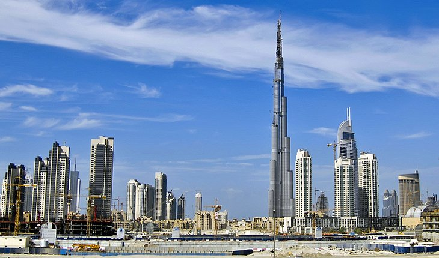

Paris
Whether sunshine is sparkling on the café terraces of Boulevard Saint-Germain, or melancholy mists of the Seine River are shrouding Notre-Dame Cathedral, Paris has a way of romancing visitors.
The love affair may begin with a first glimpse of the Eiffel Tower, then continue with strolls along the wide tree-lined avenues and in lavish formal gardens. For more info visit >> Planetware.com
For more info visit >> Planetware.com
New York
Cool, cosmopolitan, crowded, constantly evolving … the Big Apple blends big city splendor with small-town charm. Amid New York's iconic landmarks and towering skyscrapers, you'll experience
a vibrant culture permeating each of the city's distinctive neighborhoods and boroughs. Follow trendsetters to the East Village and Brooklyn to check out indie boutiques, iconic bakeries and trendy coffee shops.For more info visit >>> travel.usa.com
Dubai
Dubai's landmark building and major tourist attraction is the Burj Khalifa, which at 829.8 meters is the tallest building in the world and the most famous of the city's points of interest.
For most visitors, a trip to the observation deck on the 124th floor here is a must-do while in the city. The views across the city skyline from this bird's-eye perspective are simply staggering.For more info visit>>>planetware.com